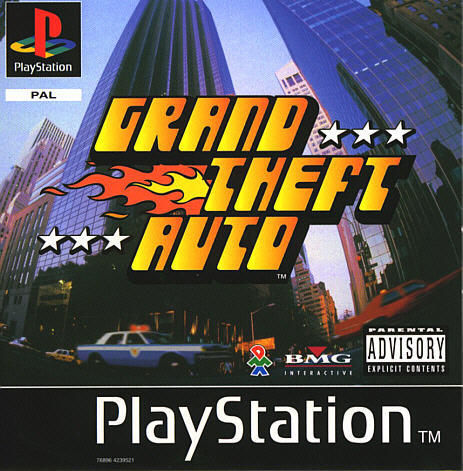
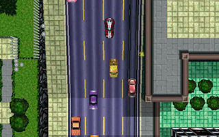
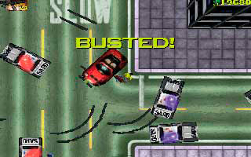
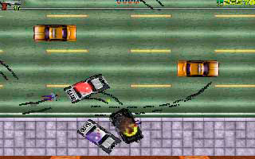
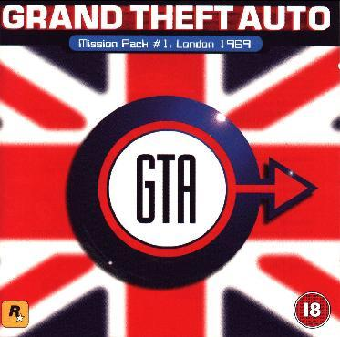
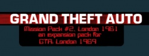

Grand Theft Auto

Descripción
El juego que dio comienzo a la que posiblemente sea la saga más exitosa de la historia de los videojuegos, una aventura de acción en 2D con una perspectiva cenital que nos pone en la piel de un criminal que tiene que realizar todo tipo de fechorías, en tres ciudades diferentes inspiradas en los Estados Unidos mientras escapamos de la policía y nos enfrentamos a las bandas rivales.
Capturas del videojuego



Información del videojuego
| Desarrollador | Plataforma | Fecha de lanzamiento |
|---|---|---|
| Rockstar North | PC, Game Boy Color, PSOne | 1 de mayo de 1998 |
Expansiones
Como prometí, añadiré información sobre las expansiones de algunos videojuegos de Rockstar Games.

Grand Theft Auto: London 1969 (1999)
Este GTA se publicó y vendió como un producto independiente, aunque originalmente era una expansión del primer Grand Theft Auto. Por eso lo he incluido en este apartado. Esta expansión nos lleva al Londres de los años sesenta, donde trabajaremos para diferentes organizaciones criminales y realizaremos todo tipo de encargos.

Grand Theft Auto: London 1961 (1999)
Es una precuela de la anterior, ambientada ocho años antes. Nos permite conocer acontecimientos anteriores y disfrutar de nuevas misiones y desafíos.
Mi opinión sobre las expansiones
Son unas expansiones bastante curiosas porque supusieron la primera y, hasta ahora, única vez que un GTA nos ha llevado oficialmente fuera de Estados Unidos. Hablando del juego en sí, supongo que para su época estaría bastante bien y que añadir Londres como escenario aportaba un toque diferente a la saga.
Así que muy bien por Rockstar. A ver si algún día se atreven a desarrollar un nuevo GTA ambientado fuera de Estados Unidos. (Y si llegamos vivos para verlo, claro.)